T0 interaction review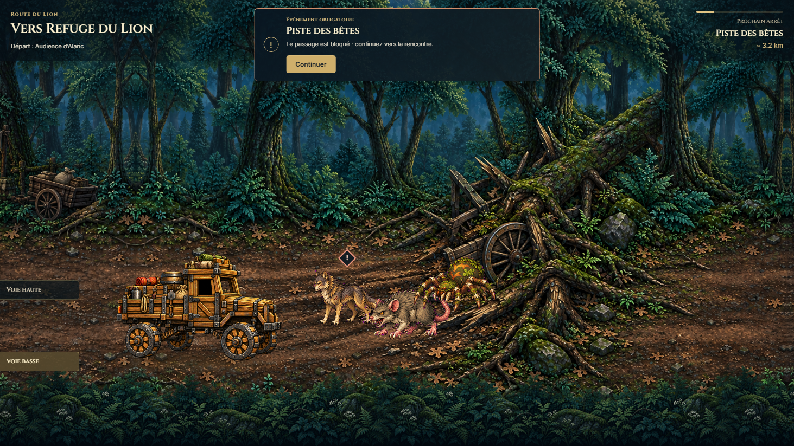
Mandatory event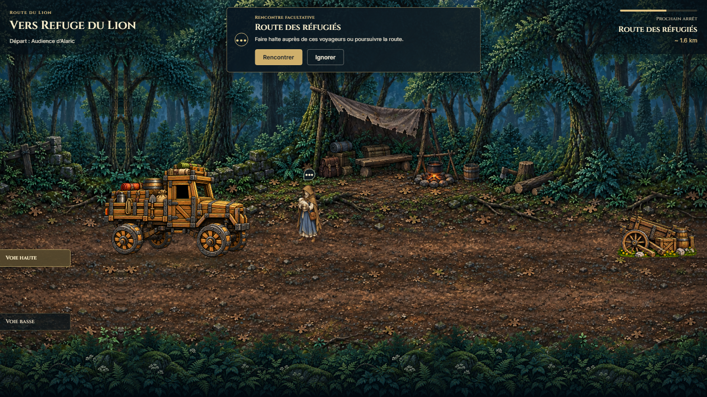
Optional story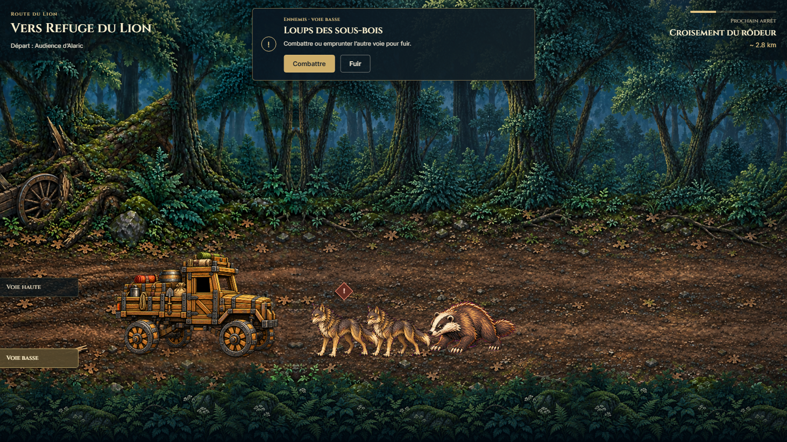
Fight / Flee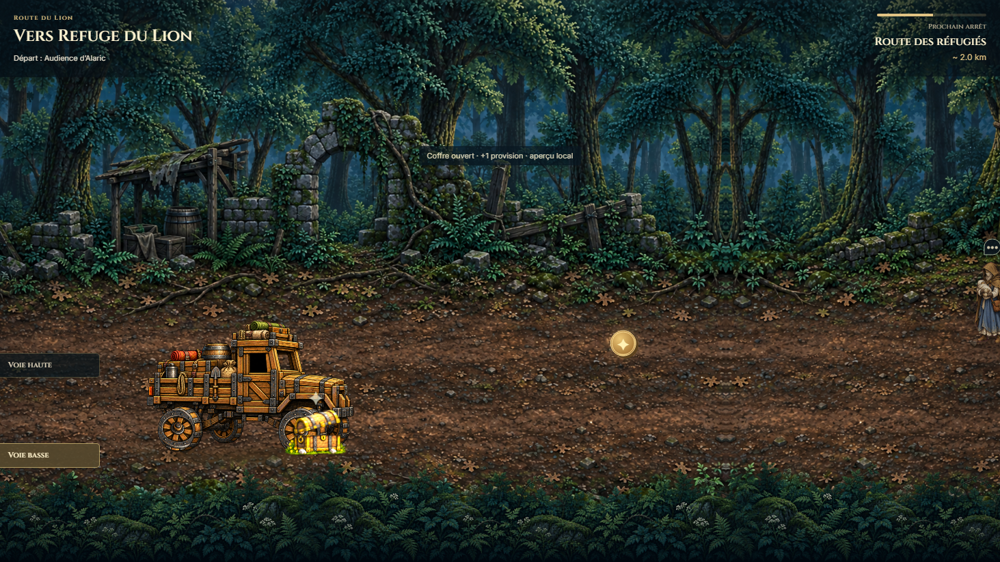
Open and collect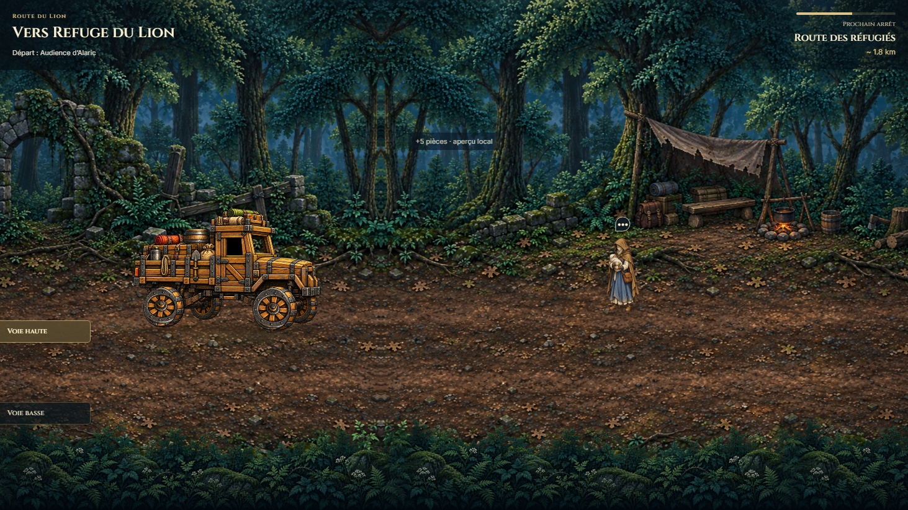
Collect gold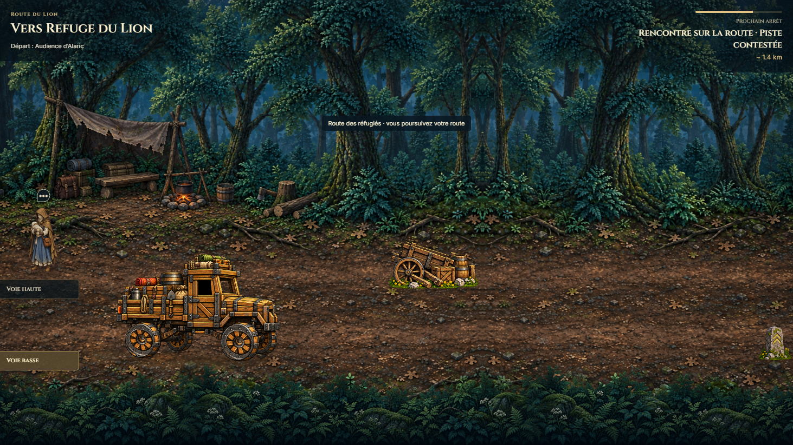
Avoid debris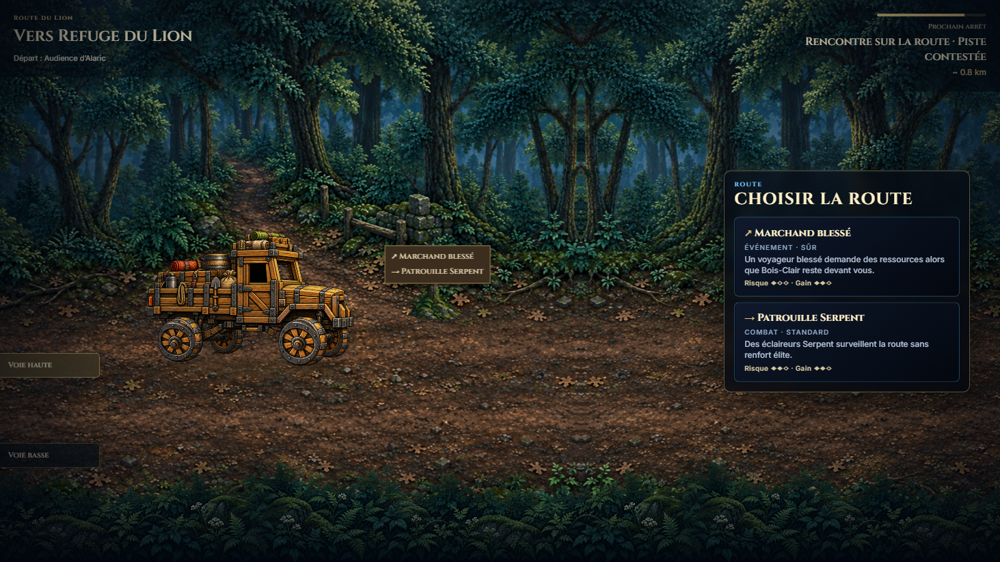
Physical direction choice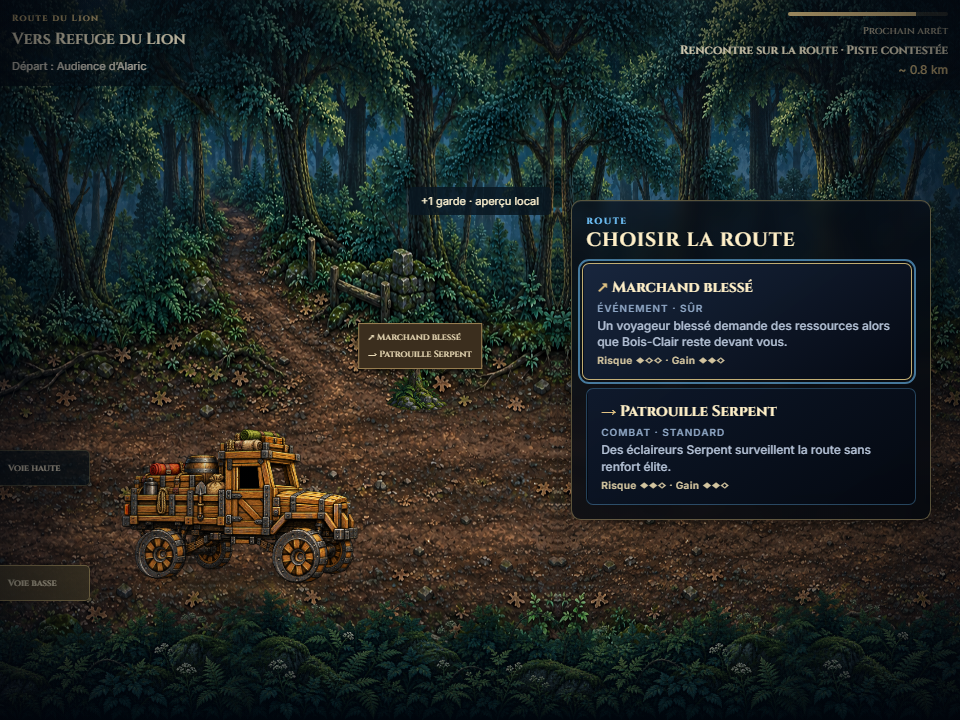
Narrow viewport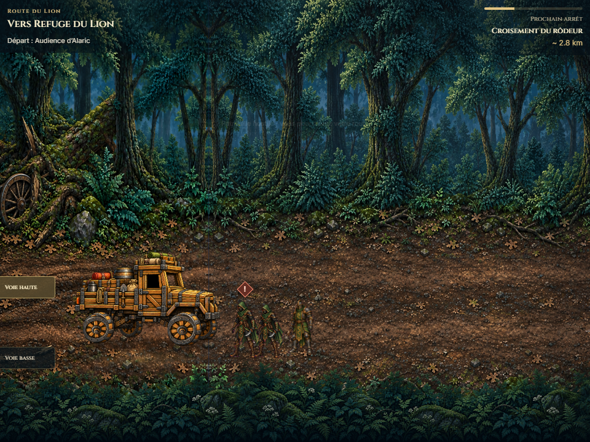
Flee while enemies remain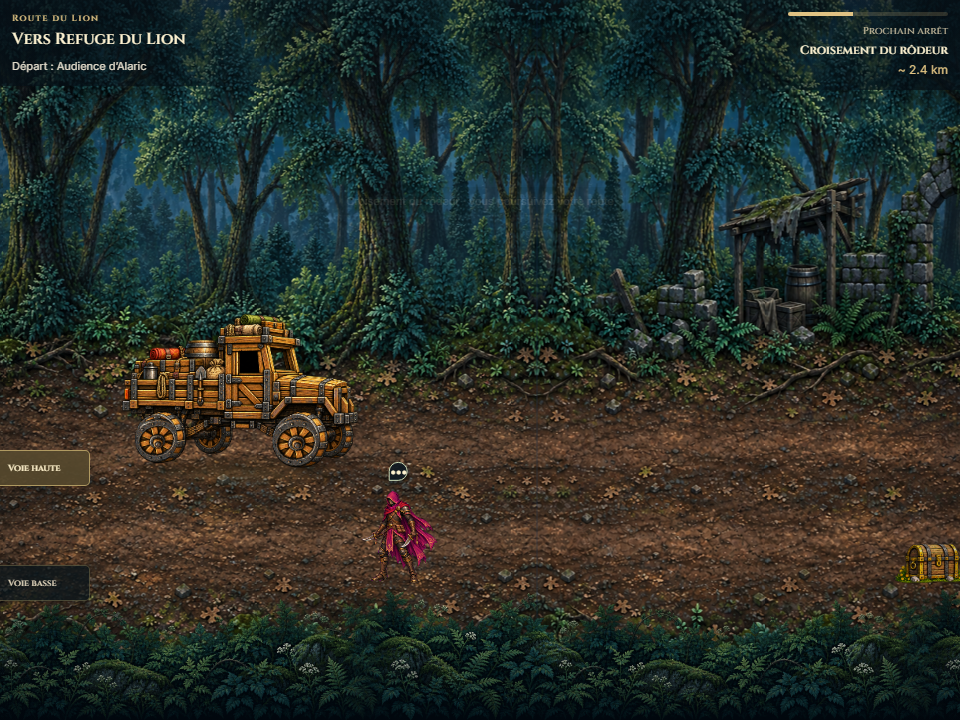
Ignore before bypass is recordedCovered branch commit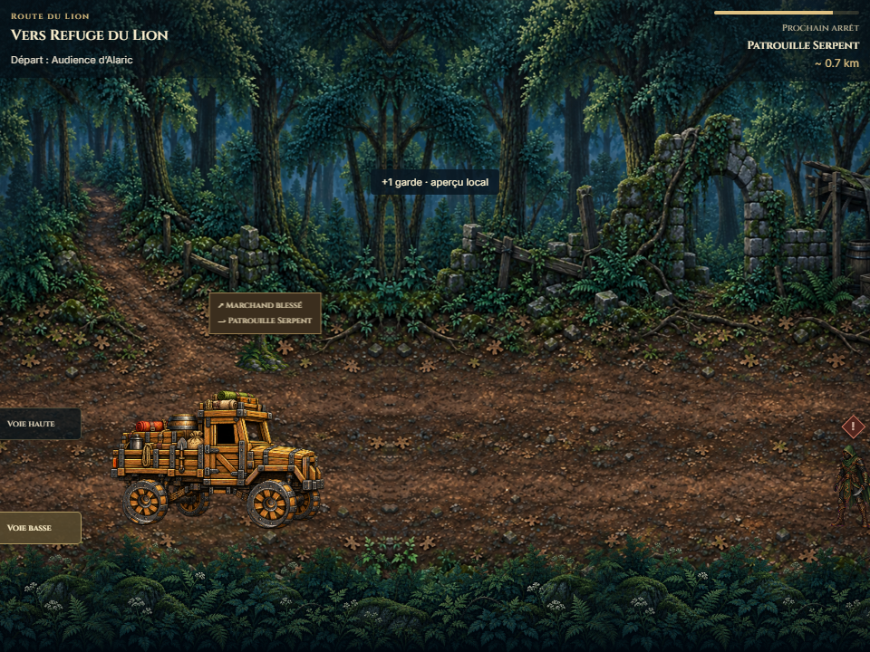
Combat branch continuation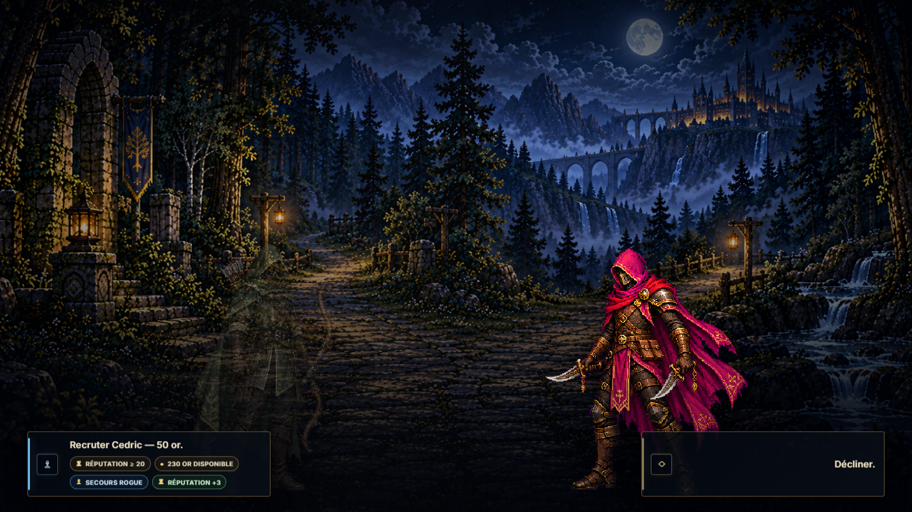
Canonical narrative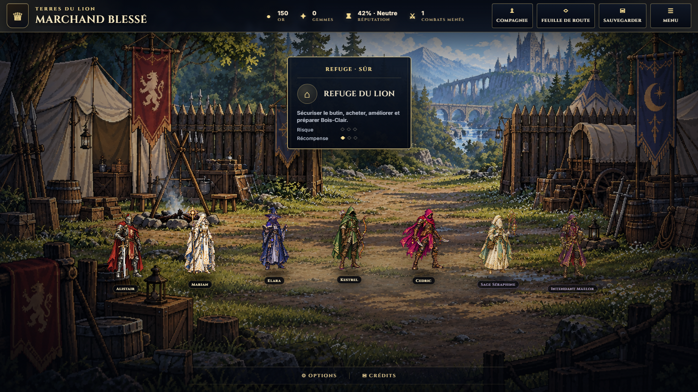
Travel View return